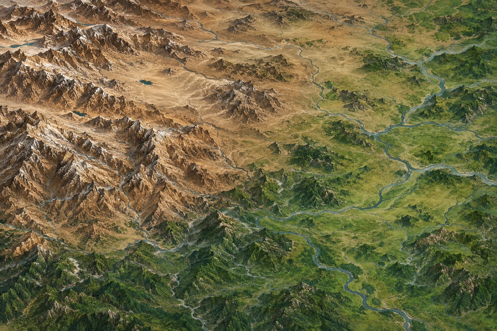

三國
Romance of the Three Kingdoms
II
Loading the realm…
Try again
↻

三國
4
9
16
Turn your phone sideways
Your realm is played in landscape.
Enter fullscreen
三國
Romance of the
Three Kingdoms
II
REMASTERED
Romance of the Three Kingdoms II
New Game
Load Game
Quit
×
三國
The game is closed
You can close this browser tab.
Return to launch
春
January · 189 AD
Spring
Yan Province
Province 9
Menu
Province map
Ownership on
⌖
+
−
#
Drag to explore · Pinch to zoom · Tap a province
Your realm
Unclaimed
ISSUE AN ORDER
×